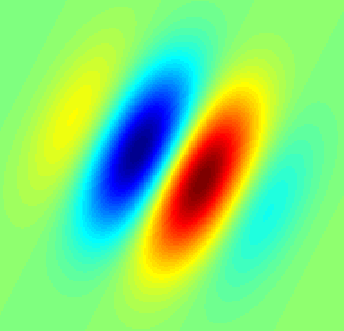
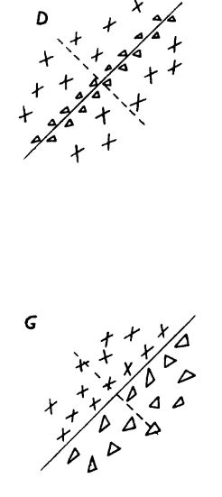

class: left, name:opening # Brainlight - Computational Thomas L. Athey <br><br> <img src="images/funding/jhu_bme_blue.png" STYLE="HEIGHT:95px;"/> <img src="images/funding/KNDI.png" STYLE="HEIGHT:95px;"/> <br> .foot[w: <http://neurodata.io/talks/mouselight_20_01_15.html>] --- ## Outline - Linear Model - Gabor Filters - Logistic Regression - Experiments - Dimensionality Reduction --- ## .k[Linear Models] --- ## Linear Models - y = f(Wx) - *** --- ## .k[Gabor Filters] --- ### Mathematical Motivation - Product of wave and Gaussian - Specifies frequency and spatial content - "Elementary Signal" with maximum possible density of time/frequency information [Gabor, 1946] --- ### Biological Motivation - Mimics simple cells in the mammalian visual cortex .pull-left[ <figure>  <figcaption>Gabor Filter (wikipedia.com).</figcaption> </figure> ] .pull-right[ <figure>  <figcaption>Hubel and Wiesel, 1962.</figcaption> </figure> ] --- ## .k[Logistic Regression] --- ## Logistic Regression - Formula*** - Maximum Likelihood (consistency (BD p410), asym normality (file:///C:/Users/Thomas%20Athey/Downloads/logisticregression.pdf)) - Convex Optimization (http://mathgotchas.blogspot.com/2011/10/why-is-error-function-minimized-in.html) --- ## .k[Experiments] --- ## Experiment 1 - Consensus Points and offset points *** - 5 fold cross validation - 94% accuracy - All 0 offset --- class: top, left ### Thanks for the Help on the Slides <div class="container"> <img src="faces/jovo.png"/> <div class="centered">Joshua Vogelstein</div> </div> <div class="container"> <img src="faces/mim.jpg"/> <div class="centered">Michael Miller</div> </div> <div class="container"> <div class="centered">Anthony Kolasny</div> </div> <div class="container"> <img src="faces/vikram.jpg"/> <div class="centered">Vikram Chandrashekhar</div> </div> <div class="container"> <img src="faces/bijan.jpg"/> <div class="centered">Bijan Varjavand</div> </div> <div class="container"> <div class="centered">Victor Wang</div> </div> <img src="images/funding/nih_fpo.png" STYLE="HEIGHT:95px;"/> w: <http://neurodata.io/talks/mouselight_19_11_13.html></http:> --- ### Supplement ---